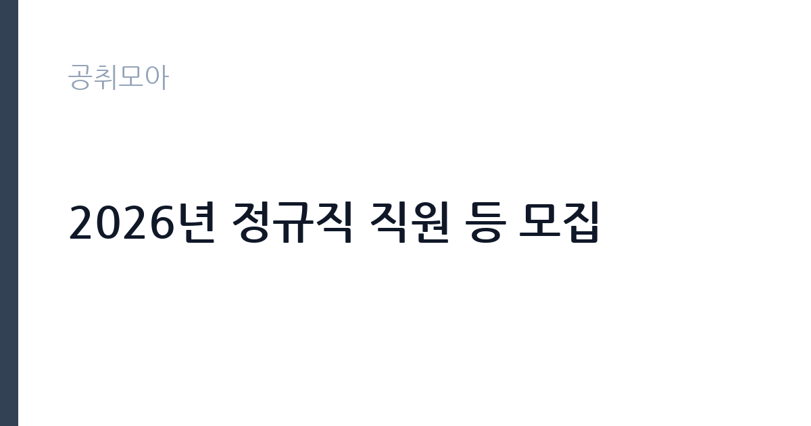

[공공기관] 2026년 정규직 직원 등 모집
제주국제자유도시개발센터 · 제주 · 마감 2026-11-13 (D-15) · 출처 나라일터

한눈에 보는 모집 조건
| 기관 | 제주국제자유도시개발센터 |
|---|---|
| 공고명 | 2026년 정규직 직원 등 모집 |
| 고용형태 | 정규직 |
| 근무지 | 제주 |
| 게시일 | 2026-10-29 |
| 마감일 | 2026-11-13 (D-15) |
지원자격, 이렇게 읽으세요
- 6급 15명 7급 2명 공무직 1명
- 접수 ~2026-11-13 마감
- 세부 조건은 원문 공고문 확인
정규직 채용은 기간의 정함이 없는 근로계약을 전제로 합니다. 수습 기간을 두고 평가한 뒤 정규직으로 확정하는 절차가 일반적이며 기관의 인사 규정과 임금 체계를 적용받습니다. 이번 공고는 제주국제자유도시개발센터에서 직접 진행하는 자체 전형으로, 응시자격과 제출서류는 공고문에 항목별로 제시됩니다. 묶음 모집 공고는 분야별 요건이 서로 다르므로 한 분야의 요건을 다른 분야에 적용하면 안 됩니다. 학위·자격증·경력 요건이 분야마다 다르게 붙고, 직급도 5급 상당부터 9급 상당까지 섞여 있는 경우가 흔합니다. 시간선택제 분야는 주당 근무 시간이 따로 정해져 보수도 비례해 달라집니다. 공고문의 모집분야 표에서 본인 분야의 행만 확인하고, 우대 사항과 제출서류도 그 분야 기준으로 준비하십시오. 서류는 접수 마감 이후 보완이 되지 않으므로 자격 요건과 증빙 서류를 마감 전에 모두 갖춰야 합니다. 공고문에 명시된 우대 사항은 해당 여부를 확인해 증빙을 첨부해야 가점이 반영됩니다. 공고문의 응시자격 표를 보면 자격 항목이 여러 줄로 나뉘어 있으므로, 각 줄을 하나씩 체크하며 본인 해당 여부를 표시해 두면 누락을 줄일 수 있습니다.
이 공고의 포인트
이 공고의 첫 번째 포인트는 분야가 나뉘어 있다는 점입니다. 같은 공고라도 지원하는 분야에 따라 직급·자격요건·근무기간이 모두 달라지므로, 공고문의 모집분야 표에서 본인 분야 행을 먼저 확정해야 합니다. 두 번째는 고용 형태입니다. 수습 기간 평가를 통과하면 기간의 정함이 없는 신분이 되어 고용이 안정됩니다. 세 번째는 근무지입니다. 제주 지역 근무로, 분야에 따라 전국 단위 근무가 가능한 경우도 있으니 공고문의 근무예정지를 분야별로 확인하십시오. 묶음 공고는 분야별 경쟁률 차이가 커서, 지원자가 적은 분야를 고르는 것도 전략이 됩니다.
전형은 어떻게 진행되나
전형은 서류심사와 면접심사를 기본으로 하고 직무에 따라 필기나 실기, 체력검정이 추가됩니다. 서류 단계에서는 응시자격 충족 여부와 제출서류 형식을 확인하며 이 단계에서 탈락하는 지원자가 적지 않습니다. 면접은 직무 이해도와 경험을 확인하는 방식으로 진행되고 발표는 개별 통보나 홈페이지 게시로 이뤄집니다. 최종합격 이후에는 결격사유 조회와 채용 신체검사가 이어지며 이 절차에서 문제가 확인되면 합격이 취소될 수 있습니다. 구체적인 전형 단계와 배점은 공고문에 표로 정리되어 있으니 원문을 기준으로 준비하십시오. 서류 단계에서 요건을 충족하지 못하면 이후 전형을 준비할 기회가 없으므로, 제출 전 요건 대조를 한 번 더 하는 것이 좋습니다.
원문에서 확인한 전형 방식
2026년 정규직 직원 등 모집 제주국제자유도시개발센터는 제주국제자유도시 개발사업을 효율적으로 추진하기 위해 설립된 국토교통부 산하 공기업으로, 제주국제자유도시 개발을 선도적으로 이끌고 글로벌 역량을 갖춘 창의적이고 우수한 인재를 모집하오니 많은 관심과 지원 바랍니다. ㅁ 채용분야 및 인원: 총 18명 ㅇ 6급_자격_일반행정(전국): 4명 ㅇ 6급_자격_일반행정(제주): 2명 ㅇ 6급_자격_회계(전국): 2명 ㅇ 6급_자격_전산(전국): 2명 ㅇ 6급_자격_전기(전국): 2명 ㅇ 6급_자격_토목(전국): 1명 ㅇ 6급_자격_인공지능(전국): 1명 ㅇ 6급_자격(보훈)_일반행정(전국): 1명 ㅇ 7급_자격(고졸)_일반행정(제주): 2명 ㅇ 공무직_자격_차량관리(전국): 1명 ㅁ 지원서 접수기간 ㅇ 2026. 10. 29.(목) ~ 11. 13.(금) 14:00까지 ※ 마감일 14:00 이후 제출 불가 ㅁ JDC 채용사이트 ㅇ https://jdc.recruit-zone.co.kr ㅁ 선발방법 ㅇ 6급, 7급: 1차 전형(필시시험), 2차 전형(면접심사) ㅇ 공무직: 1차 전형(서류심사), 2차 전형(면접심사) ※ 기타 자세한 사항은 [붙임] 공고문을 참고 바랍
이런 분께 추천해요
- 공고 모집분야 중 하나의 요건을 충족하는 분
- 분야별 근무기간·근무시간 차이를 확인한 분
- 배치 분야를 수용할 수 있는 분
지원 전 체크리스트
- 응시자격 요건과 경력 기준을 충족하는가 — 경력은 증명서로 입증해야 합니다
- 수습 기간과 정규직 전환 조건을 확인했는가
- 제출서류 목록을 모두 준비했는가 — 누락 시 서류 단계에서 탈락합니다
- 접수 마감 2026-11-13 이전에 접수 방식을 확인해 제출했는가
모집 일정과 제출 타이밍
2026-10-29에 공고가 올라왔고 접수는 2026-11-13까지입니다. 남은 기간은 15일이며, 이 기간에 자격증 사본과 경력증명서, 주민등록등본 같은 기본 서류를 모두 준비해야 합니다. 경력증명서는 발급에 며칠이 걸리는 경우가 있으니 가장 먼저 신청하십시오. 접수는 온라인과 우편·방문으로 나뉘는 경우가 많고, 우편 접수는 도착 기준으로 판정되므로 마감일 소인만 믿으면 안 됩니다. 면접 일정은 서류 발표 후 개별 통보되므로 제출 후에도 연락을 받을 수 있도록 유지해야 합니다. 공휴일이 끼어 있으면 증명서 발급이 늦어질 수 있으니 발급 일정을 앞당기십시오. 제주 근무지는 도내 이동 거리가 길고 숙소 제공 여부가 총비용에 큰 영향을 줍니다. 마감까지 여유가 있어 자격 요건을 천천히 확인하고 준비할 수 있습니다. 선발 인원이 한 자릿수를 넘어 서류와 면접 점수를 함께 관리하는 전략이 필요합니다.
직무 이해하기: 공공기관
제주국제자유도시개발센터(JDC)는 제주를 국제자유도시로 조성하기 위한 개발사업과 투자유치를 수행하는 국토교통부 산하 공기업(준시장형)입니다. 제주첨단과학기술단지와 영어교육도시, 헬스케어타운, 항공우주박물관을 운영하고 공공임대주택 공급과 지정면세점 사업을 함께 수행합니다. 본사가 제주시 첨단로에 있어 상당수 직위가 제주 근무이며, 일부 직렬은 전국 단위로 배치됩니다. 이 공고는 한 장의 공고문에 여러 모집분야를 함께 담은 형태입니다. 분야마다 담당 업무가 완전히 달라서, 같은 공고에 지원해도 배치되는 부서와 하는 일이 전혀 다를 수 있습니다. 공고문에는 보통 분야별 인원·직급·자격요건이 표로 정리되어 있고, 원서접수도 분야를 골라야 진행됩니다. 따라서 먼저 본인이 지원할 분야를 하나로 정하고, 그 분야의 자격요건과 근무기간만 따로 읽는 방식이 안전합니다. 여러 분야를 동시에 지원할 수 있는지는 공고문의 중복지원 제한 조항으로 확인해야 합니다. 업무는 혼자 처리하기보다 부서 단위로 나눠 진행되므로 담당 구역과 협업 범위를 입사 초에 확인하는 것이 중요합니다. 업무 강도와 근무 시간대는 부서 배치에 따라 달라지므로 면접에서 확인하는 것이 가장 정확합니다.
자기소개서 작성 팁
지원서 첫 문단에서 지원 분야를 명확히 밝히는 것이 가장 중요합니다. 묶음 공고는 같은 기관에 여러 지원자가 몰리므로, 어떤 분야에 왜 지원했는지가 드러나지 않으면 준비도가 낮게 평가됩니다. 그 분야의 실무 경험과 자격을 앞세우고, 다른 분야의 경험을 섞어 나열하지 마십시오. 문항별 글자 수 제한을 먼저 확인하고, 각 문항의 첫 문장에 결론을 배치하는 방식이 읽기 쉽습니다. 지원 동기는 기관의 어떤 사업에 기여하겠다는 한 문장으로 시작하고, 이어서 본인의 경험을 근거로 붙이십시오. 감점을 피하려면 다른 기관에 보낼 수 있는 범용 문장을 그대로 쓰지 않는 것이 중요합니다. 기관 이름과 사업명이 문장 안에 자연스럽게 들어가야 준비도가 드러납니다.
면접 준비 포인트
면접은 지원한 분야의 직무를 기준으로 진행됩니다. 왜 여러 분야 중 그 분야를 골랐는지, 그 분야의 실무를 어느 정도 이해하는지 묻습니다. 다른 분야로 배치될 수 있다는 질문이 나오면 솔직하게 답하고, 본인 경험과 맞는 분야를 근거와 함께 설명하십시오. 답변은 상황, 판단, 조치의 순서로 정리하면 전달이 분명해집니다. 모르는 질문에는 모른다고 밝히고 확인 방법을 제시하는 편이 억지 답변보다 낫습니다. 마지막에는 근무 의사와 함께 2026-11-13 이후 일정에 언제든 응할 수 있다는 점을 전달하십시오. 지원 기관의 최근 사업이나 조직 개편 내용을 확인해 두면 지원 동기 질문에서 차이가 납니다.
급여·근무조건 읽는 법
알리오(공공기관 경영정보 공개시스템) 2025년 결산 경영공시 기준으로 제주국제자유도시개발센터 일반정규직 1인당 평균보수액은 6,638만원, 공시된 신입사원 초임은 3,721만원입니다. 무기계약직 1인당 평균보수액은 4,156만원으로 공시되어 정규직과 차이가 납니다. 평균보수액은 기본급에 고정수당·실적수당·성과상여금·급여성 복리후생비를 모두 합산한 값이라 월 기본급만 보고 판단하면 실제와 크게 어긋납니다. 정규직 신입의 경우 공시된 신입사원 초임이 출발점이 되고, 이후 호봉과 성과급에 따라 평균보수에 접근합니다. 보수는 채용 신분과 기관 임금 규정에 따라 정해집니다. 공무직과 기간제는 기관 임금표를, 임기제공무원은 연봉등급제를 적용받습니다. 공고문에 금액이 제시되지 않은 경우에는 처우 항목이나 첨부된 보수표를 확인해야 합니다. 수당과 상여 포함 여부에 따라 실수령액이 달라집니다. 2026년 적용 최저임금은 시급 10,320원, 월 환산 2,156,880원(주 40시간·209시간 기준)입니다. 고용노동부 고시 제2025-47호로 확정된 금액입니다. 공고문에 금액이 제시되지 않은 항목은 원문 보수표나 처우 설명에서 확인해야 하며 확인되지 않은 수치는 쓰지 않는 것이 원칙입니다. 비교할 때는 월 급여뿐 아니라 상여·명절휴가비·복지포인트·초과근무수당까지 포함한 연간 총액으로 계산하십시오. 기간제라면 계약 기간 동안의 총액을, 무기계약이라면 호봉 상승과 정년까지의 누적 소득을 기준으로 판단하는 편이 정확합니다.
자주 묻는 질문
- 선발 인원은 몇 명인가요?
공고문 기준 15명입니다. 직종별로 인원이 나뉘는 경우가 있으니 모집분야 항목을 함께 확인하십시오. - 근무지는 어디인가요?
제주 지역의 제주국제자유도시개발센터 소속 근무지입니다. 세부 주소와 출퇴근 조건은 원문 공고문에서 확인할 수 있습니다. - 보수는 얼마인가요?
채용 신분(정규직)과 기관 임금 규정에 따라 정해지며 구체적인 금액은 공고문 처우 항목에 제시됩니다. 금액이 공개되지 않은 경우에는 원문의 보수표를 확인하십시오.
함께 보면 좋은 공고
[공공기관] 2026년 (재)한국에너지재단 제2차 기간제 채용 공고(채용 제2026-06호) — 마감 2026-11-13[공공기관] 한국고전번역원 2026년 4분기 제2차 직원 신규 채용 — 마감 2026-11-05[공공기관] 계약직 연구원/행정(전북응급의료지원센터) 채용 재공고 — 마감 2026-11-09출처: 나라일터 공개정보를 바탕으로 공취모아가 정리한 안내글입니다. 모집 조건·일정은 변경될 수 있으니 지원 전 반드시 원문 공고문을 확인하세요. 본 글은 정보 제공용이며 합격을 보장하지 않습니다.